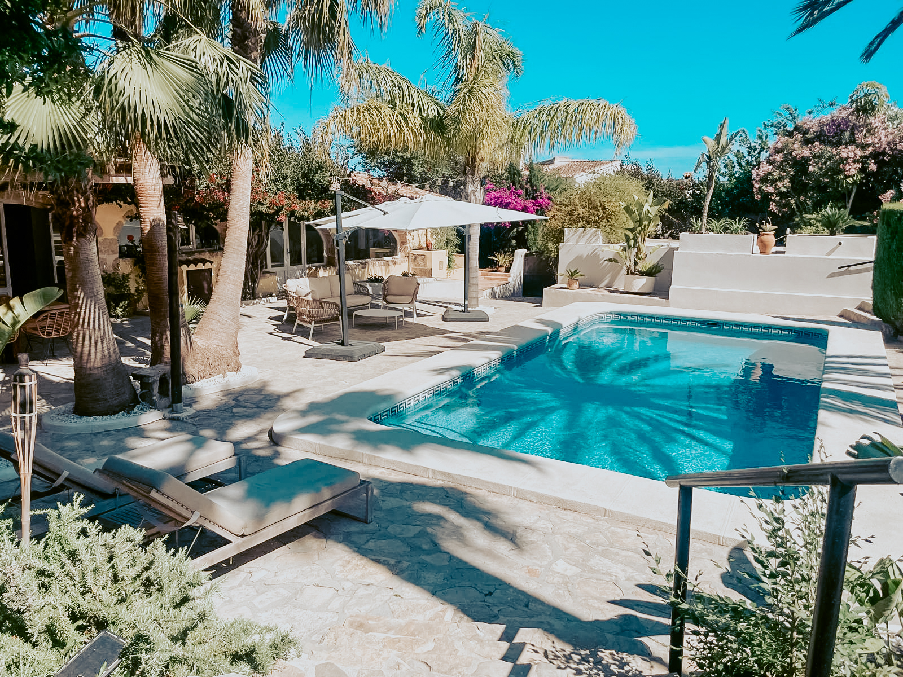
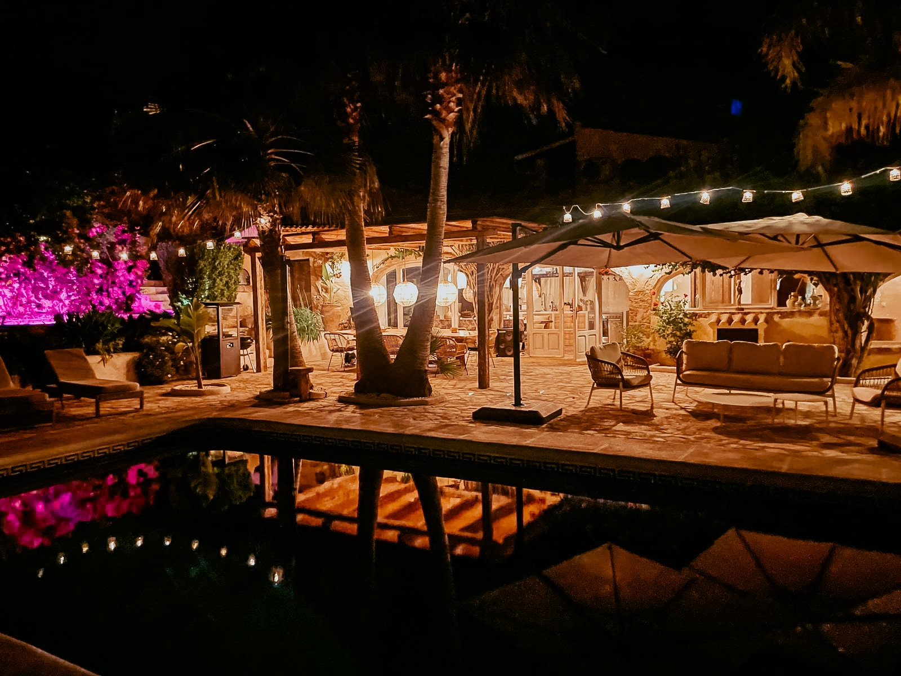
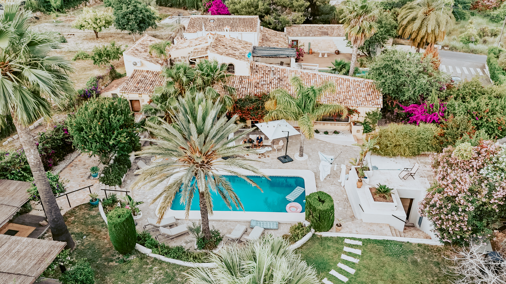
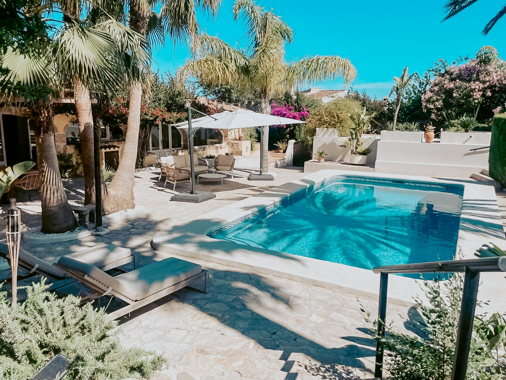
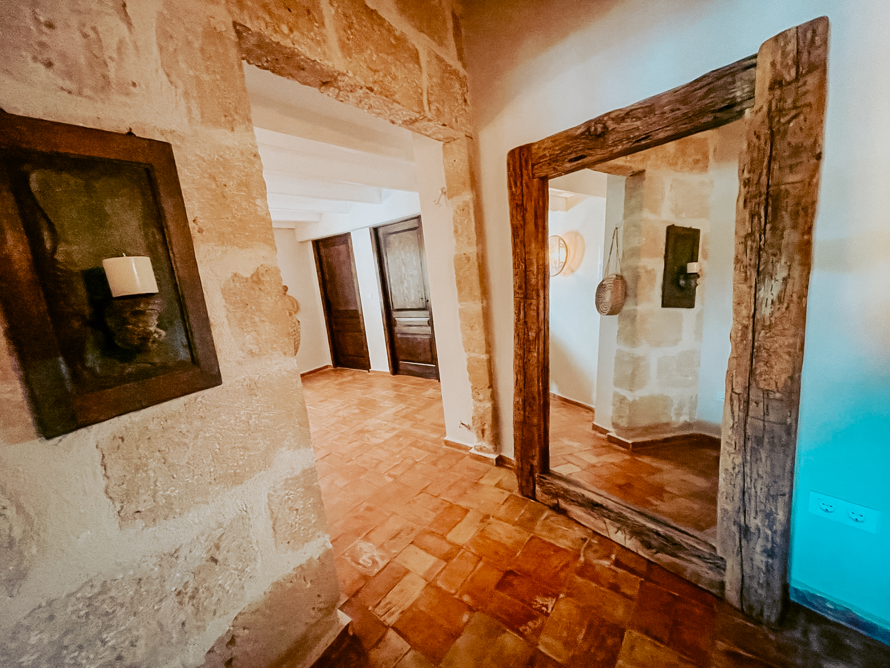
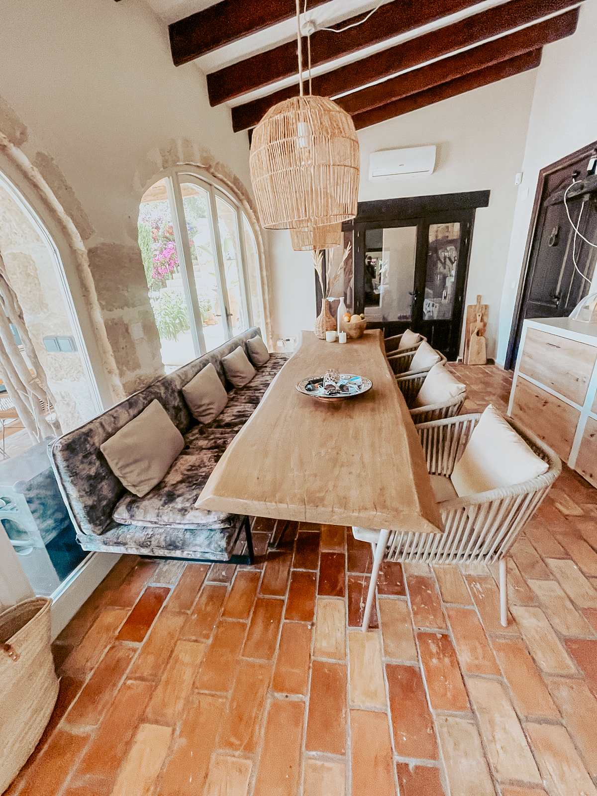
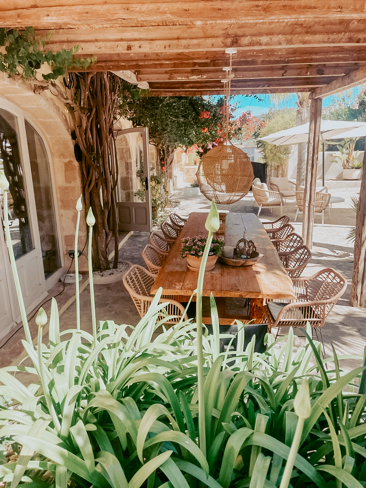

Finca el Corazón
Een casa met karakter op top locatie. Geniet van rust, ruimte en zon.
Zie meer foto's
Een casa met karakter op top locatie. Geniet van rust, ruimte en zon.
Zie meer foto'sFinca el Corazón is een warm en stijlvol toevluchtsoord aan de zonnige Costa Blanca. Gelegen in een vlak en groen perceel in Javea/Xàbia, biedt deze finca alles wat je nodig hebt om echt tot rust te komen – met charme, sfeer en comfort.
Of je nu komt om te ontspannen, te werken of samen te zijn: dit huis voelt als thuiskomen in de zon.
De finca is geschikt tot 8 personen en beschikt over 4 slaapkamers, elk met een eigen badkamer.
Comfort en gemak voor een zorgeloos verblijf.
Privé zwembad
Veranda’s & loungehoeken
Buitenkeuken
4 slaapkamers
4 badkamers
Airco in alle ruimtes
Supersnelle WiFi
Zonnige tuin
8(*10) personen
* In een van de slaapkamers is een extra ruimte met een tweepersoonsbed
Binnen domineren lichte tinten, houten accenten en handgemaakte details. Buiten nodigen de terrassen, het zwembad en de tuin je uit om te leven in het ritme van de zon. Van lange tafelsessies tot siësta’s op de ligbedden onder de veranda – hier leef je buiten.
Finca el Corazón ligt op slechts een paar minuten van de kust en het oude centrum van Jávea/Xàbia. Je vindt er stille baaien, levendige marktjes, lokale tapasbars en prachtige wandelroutes in de bergen en langs de zee.
Ook in de wintermaanden zit je bij Finca El Corazón volop in de zon. Dankzij het grote, vlakke perceel en de uitgestrekte tuin zonder omringende huizen, schijnt de zon hier van ’s ochtends vroeg tot laat in de middag – zelfs wanneer ze laag hangt. Zo kun je in december gewoon in je ligstoel aan het zwembad genieten van de warme zonnestralen.















We werken niet met een boekingssysteem – we houden het graag persoonlijk.
Stuur ons een kort berichtje en we denken graag met je mee.
Prijzen op aanvraag – afhankelijk van seizoen, gezelschap en verblijfsduur.